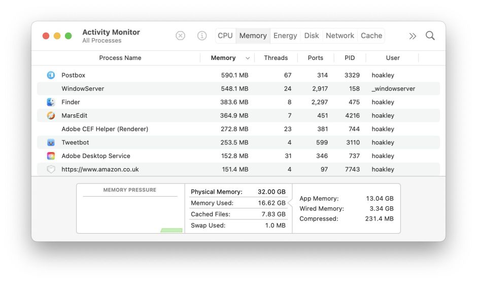
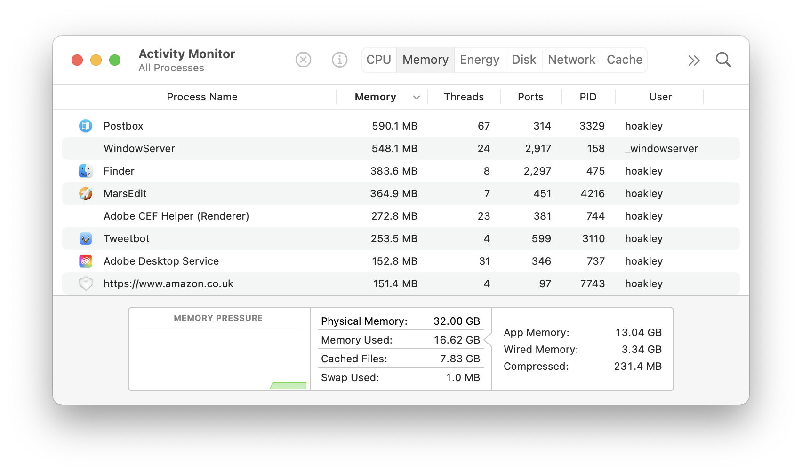
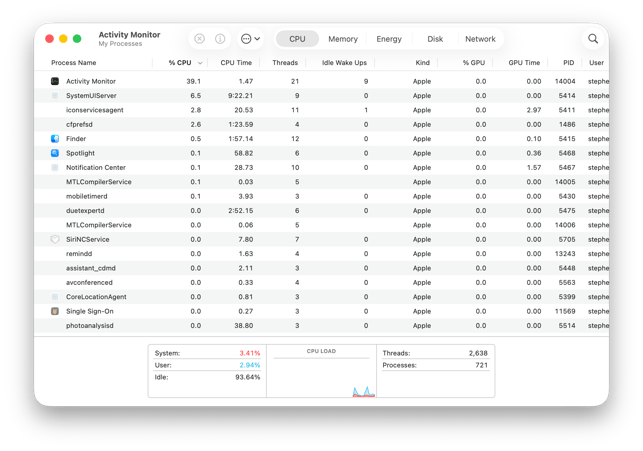
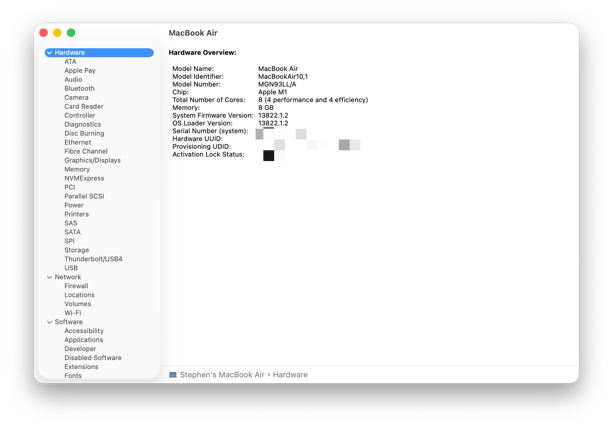

שיעור 15: דיאגנוסטיקה¶
מדריך עזר לתלמיד
סקירה¶
מושגי יסוד ומתודולוגיות (Core Concepts)¶
-
Isolation: אסטרטגיית הליבה של Apple לפתרון תקלות, שמטרתה לחצות את הבעיה לשניים בכל שלב כדי לבודד את המקור:
-
משתמש לעומת מערכת: יצירת משתמש בדיקה (Test User) חדש כדי לבדוק האם התקלה קיימת רק בפרופיל המשתמש הספציפי (הגדרות, תהליכי LaunchAgents שלו) או שמדובר בבעיה מערכתית (System-wide).
- תוכנה לעומת חומרה: הפעלת המחשב ל-macOS Recovery או הרצת Apple Diagnostics כדי לשלול בעיית חומרה. אם הבעיה לא מתרחשת במערכת חלופית, מקורה בתוכנה.
- רשת לעומת לקוח: חיבור המחשב לרשת אחרת (למשל, Hotspot דרך הטלפון) כדי לבדוק האם התקלה קשורה להגדרות ה-Firewall הארגוני או לספק האינטרנט.
- Apple Diagnostics: כלי אבחון חומרה המובנה בקושחה (Firmware) שנועד לבדוק רכיבים פיזיים כגון זיכרון (RAM), מאווררים, סוללה וחיישנים. במחשבי Apple Silicon מפעילים אותו מתוך תפריט האפשרויות (לחיצה ארוכה על כפתור ההדלקה) ולחיצה על
Command + D. - Verbose Mode: מצב הפעלה (רלוונטי יותר במחשבי Intel עם מקשי
Command + V) המציג טקסט של תהליך האתחול במקום לוגו התפוח. כיום במחשבי Apple Silicon מוחלף בעיקר בבדיקת לוגים עמוקה לאחר עליית המערכת. - Activity Monitor & Console (היסטוריה קצרה): אפליקציית Activity Monitor החלה את דרכה ב-2003 (Mac OS X Panther) כאיחוד של הכלים Process Viewer ו-CPU Monitor. בעבר, ה-Console עבד מול קבצי טקסט פשוטים, אך החל מ-macOS Sierra ב-2016 המערכת עברה ל-Unified Logging System - מערכת לוגים בינארית ואחידה המציגה אלפי אירועים בשנייה.
- App Memory Leaks (דליפות זיכרון באפליקציות): מצב שבו אפליקציה צורכת עוד ועוד זיכרון ללא הרף ולא משחררת אותו חזרה למערכת. הדבר גורם לאיטיות רבה במק (תופעת ה-Beachball), אך לרוב ללא רעש מאווררים מוגבר (המאפיין עומס על המעבד). הפתרון הוא לעקוב אחרי צריכת הזיכרון בלשונית Memory ב-Activity Monitor, ולכבות את האפליקציה לחלוטין (Quit). לעומת זאת, דליפות בזיכרון הליבה (Kernel Memory Leaks) הן נדירות וחמורות בהרבה, ויובילו לקריסת מערכת מוחלטת (Kernel Panic). לקריאה נוספת מהמאמר של Eclectic Light
Safe Mode¶
Safe Mode הוא כלי אבחון עוצמתי שפותר לעיתים קרובות בעיות בעצם הפעלתו בלבד, כיוון שהוא מנקה ומאפס רכיבי מערכת.
מה קורה כשמפעילים את ה-Mac ב-Safe Mode?
- בדיקת דיסק: המערכת מריצה בדיקה ותיקון לוגי של כונן האתחול באמצעות התהליך
fsck(File System Consistency Check). - נטרול הרחבות: מונע טעינה של הרחבות קרנל (Kernel Extensions / Kexts) של צד-שלישי.
- חסימת תהליכי רקע: לא מאפשר ל-LaunchDaemons ול-LaunchAgents של אפליקציות צד-שלישי לפעול. רק שירותי מערכת מובנים נטענים.
- חסימת פריטי התחברות (Login Items): מונע פתיחה אוטומטית של חלונות ואפליקציות שהמשתמש הגדיר.
- ניקוי מטמונים (Caches): מוחק באופן זמני את מטמון הפונטים, ה-Kernel cache וקבצי System Caches, אשר לעיתים קרובות גורמים לקריסות פתאומיות של תוכנות.
- ביטול האצת חומרה: מנטרל מאיצי גרפיקה, מה שעשוי לגרום למסך לרצד, לעכבר לקרטע או לווידאו שלא להתנגן. זה תקין ומוכיח שה-Safe Mode פועל.
איך נכנסים ל-Safe Mode?
- Apple Silicon: כיבוי ה-Mac. לחיצה ממושכת על כפתור ההדלקה עד להופעת "Loading startup options". בחירת כונן ההפעלה הרצוי, לחיצה ארוכה על מקש
Shift, ולחיצה על "Continue in Safe Mode". - Intel: הדלקת ה-Mac ולחיצה מיידית וממושכת על מקש
Shiftעד להופעת חלון ההתחברות.
ארגז הכלים ב-Terminal (CLI Diagnostics)¶
רשימת פקודות שימושית לטכנאים לחקירה ואבחון מתקדם של המערכת.
מידע מערכתי מקיף (system_profiler)¶
פקודה זו היא הגרסה הטרמינלית של אפליקציית System Information, ומאפשרת לייצא מידע מלא על החומרה והתוכנה.
system_profiler SPSoftwareDataType- מציג מידע על גרסת ה-macOS, מזהה ה-Build, גרסת הקרנל וזמן הפעולה (Uptime).system_profiler SPHardwareDataType- מציג מידע על המעבד, מספר הליבות, זיכרון, מספר סידורי ו-UUID של החומרה.system_profiler SPPowerDataType- מציג את נתוני הסוללה, כולל Cycle Count ומצב בריאות הסוללה (Condition).system_profiler > ~/Desktop/MacReport.txt- מייצא את הדו"ח השלם והמלא לקובץ טקסט אל שולחן העבודה לצורך שליחה לתמיכה.
בדיקת איכות רשת מתקדמת (networkQuality)¶
פקודה מובנית (החל מ-macOS Monterey) הבודקת לא רק את מהירות ההורדה/העלאה אלא גם את יכולת הרשת להישאר רספונסיבית תחת עומס (Responsiveness).
networkQuality- מריץ את הבדיקה הרגילה בחיבורים מקבילים מול שרתי Apple.networkQuality -v- מריץ את הבדיקה עם פירוט נרחב (Verbose), כולל פירוט מדדי זמני השהייה (Latency) ספציפיים.networkQuality -s- מריץ את בדיקת הרשת באופן טורי (Sequential) ולא במקביל, כלי נהדר לבודד בעיות בתעבורת הנתונים.
תשאול מערכת הלוגים (log show)¶
ה-Unified Logging System ב-macOS מחליפה את קבצי הטקסט הישנים, ודורשת שימוש בפקודת log כדי למשוך מידע היסטורי מדויק.
log show --last 10m- מציג את כל הלוגים שנרשמו ב-10 הדקות האחרונות.log show --predicate 'process == "kernel"' --last 1h- מסנן ומציג רק לוגים ששייכים לתהליך הקרנל המרכזי מהשעה האחרונה.log show --info --debug --last 5m > ~/Desktop/logs.txt- שואב גם לוגים זמניים בדרגות Info ו-Debug (שלא נשמרים תמיד בדיסק לאורך זמן) ומייצא אותם לקובץ לניתוח נוח.
אבחון זהויות ארגוניות ב-Kerberos (klist)¶
בסביבות ארגוניות מבוססות Active Directory, מערכת ה-Kerberos משמשת לאימות שקוף (SSO) מול שירותי רשת. פקודה זו עוזרת לבדוק אם המשתמש אכן קיבל "כרטיס" (Ticket) מהשרת.
klist- מציג את רשימת כרטיסי ה-Kerberos הפעילים של המשתמש. אם הרשימה ריקה, למשתמש אין הרשאות שקופות.klist -v- מציג את כל המידע המורחב (Verbose) על הכרטיס, כולל תאריכי התחלה, תאריכי תפוגה וסוג ההצפנה, כדי לאתר תוקף שפג.
פקודות תקשורת נוספות לאבחון ובידוד¶
ping -c 4 8.8.8.8- שליחת 4 חבילות מידע לשרתי Google לבדיקת חיבוריות בסיסית לאינטרנט וזמני תגובה.traceroute google.com- מציג את נתיב ניתוב החבילות (Hops) מה-Mac ועד לשרת היעד, מאפשר לאתר היכן נתקעת התקשורת בתוך הרשת הארגונית.ifconfig- מציג מידע טכני נמוך על כרטיסי הרשת הפיזיים (ה-MAC Addresses).networksetup -listallhardwareports- הדרך הקלה והקריאה ביותר לזהות את כתובות ה-MAC הפיזיות לכל סוגי החיבורים במערכת.
התיבול הארגוני (Enterprise Diagnostics)¶
- אבחון עם MDM Profiles: לא פעם, הגדרות אבטחה של MDM מתנגשות עם פעולת תקינה (לדוגמה, חסימת USB, מגבלת Wi-Fi). אם תקלה לא נפתרת, טכנאי IT ישקול להסיר זמנית את הפרופיל הספציפי דרך System Settings > Privacy & Security > Profiles (בתנאי שלא סומן כבלתי ניתן להסרה) כדי לבודד אם הוא גורם לבעיה.
- מעקפי Network Filtering: בארגונים המשתמשים בסוכני סינון תעבורה (Content Filters / Proxies), בידוד התקלה יעשה לרוב על ידי חיבור ה-Mac לרשת סלולרית חיצונית, כדי לבחון האם הסינון הארגוני חוסם את התעבורה לאפל.
- הסרת סוכנים (Agents): נטרול כלי אבטחה של צד-שלישי (כגון Antivirus או DLP) שעלולים לקרוס ולגרום ל-Kernel Panics או האטות מערכת מורגשות.
קישורים מומלצים ולקריאה נוספת¶
-
What can you do when an app uses too much memory - מדריך אבחון וטיפול באפליקציות שזוללות זיכרון (Memory Leaks).
-
Start up your Mac in safe mode - מדריך בסיסי למשתמש לאיך להיכנס למצב בטוח (Safe Mode) כדי לבדוק תקלות.
- Use Apple Diagnostics to test your Mac - מדריך למשתמש איך להפעיל את כלי האבחון המובנה לאיתור תקלות חומרה.
- Unified Logging (log command line tool) - תיעוד מתקדם על מערכת הלוגים המאוחדת של אפל וקריאתם מהטרמינל.
- If your Mac restarts and a message appears (Kernel Panics) - מדריך תמיכה שמסביר למה המק קורס ומופעל מחדש ואיך מאתרים את הסיבה.
- Identify your Mac hardware (System Information) - איך להשתמש במידע המערכת כדי לקבל נתונים טכניים על רכיבי המחשב.
סרטון סיכום¶




המחשה ויזואלית (עזר לתלמיד)
תמונות אלו ממחישות את הממשק או המנגנון הרלוונטי לנושא השיעור.